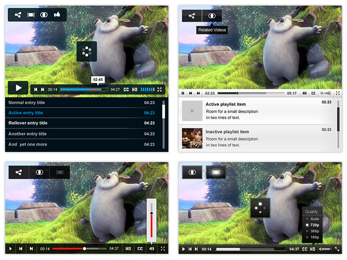

This guide explains how to get and configure existing skins for JW Player. If you're looking for information on how to design and package a skin yourself, see Building JW Player Skins.
JW Player skins change the appearance of the player, making it possible to match your embed to your site's aesthetic. All visual components of the player (the controlbar, display, tooltip, dock and playlist) can be skinned.
Here are a few examples of a skinned player These four skins are included in the Premium and Ads editions of JW6:

Technically, a JW Player skin consists of an XML file that contains a number of settings (e.g. the color of the tooltip texts) and a number of links to PNG images (e.g. for the play button).
Like with CSS, the PNG files can be stored as base64 encoded strings in the XML file. This speeds up delivery and makes managing the skin easier, since there's only 1 file.
There are two ways to get a skin for your player:
After downloading (or packaging) the skin of your choice, upload it to your webserver, so the skin can be added to your player embeds.
Once you've uploaded your skin, simply set the skin configuration option to the path where you uploaded the XML file. This can be:
Note that skins are subject to Crossdomain Security Restrictions, which causes issues when loading the skins from another domain than your website's.
Here is an example player setup block, using a domain-absolute path to the skin files:
jwplayer("myElement").setup({
file: "/uploads/example.mp4",
height: 360,
image: "/uploads/example.jpg",
skin: "/uploads/bekle.xml",
width: 640
});